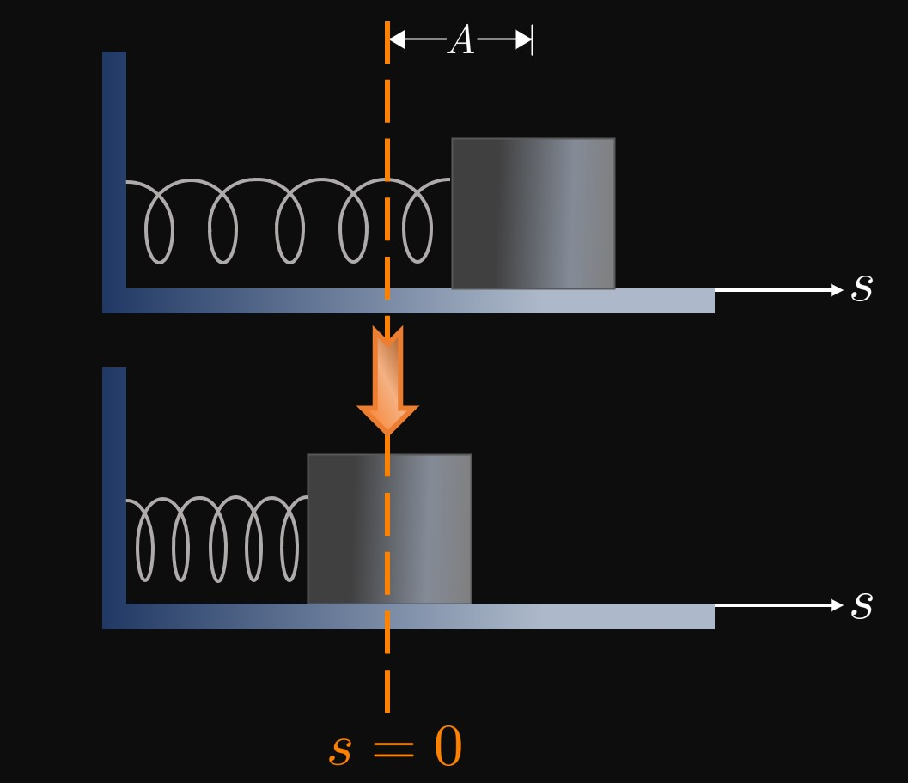

A ball rolls along the \(x\)-axis with time \(t;\)
the positive direction is to the right.
If \(v(3) \gt 0\) and \(a(3) \lt 0,\)
then fully describe the ball's motion at \(t = 3.\)
For each of exercises 3 and 4, given the position function, find the position, velocity, and acceleration at the specified time.
Let \(s(t) = e^{-5t} + 2t,\) \(t \geq 0,\) be a position function with time.
If the positive direction is to the right,
then for what values of \(t\) does a particle move to the left?
A motor pushes an object along the \(y\)-axis with time \(t \geq 0.\)
The object's position function is \(y(t) = \tfrac{4}{3} t^4 + \ln t,\)
and the positive direction is upward.
For what values of \(t\) does the motor exert an upward force?
A box slides across a rough surface, and its movement is impeded by friction.
The box's position, in feet, from an arbitrary reference point as a function of time \(t \geq 0\) (in seconds)
is given by
\[s(t) = 10 + 20t - 2t^2 \pd\]
How far does the box travel before stopping?
A particle travels along the \(y\)-axis with time \(t \geq 0\)
as modeled by the position function
\[y(t) = (\ln t)^2 - \frac{2t}{e} \pd\]
Is the particle speeding up, slowing down, or stationary at

A block is attached to a spring, and the spring is stretched a distance \(A\) past its natural length
(equilibrium position),
as in Figure 5.
The object's vibration with time \(t\) is modeled by the position function
\[s(t) = A \cos t \pd\]
The block completes one cycle (returning to its initial position) over \(0 \leq t \leq 2 \pi.\)
On this interval, when is the block
stationary?
speeding up?
slowing down?
For each of exercises 15 and 16, a function's position function with time \(t \geq 0\) is given.
Find when the particle is speeding up and when it is slowing down.
If a particle travels along a straight line
according to the position function \(s(t) = \sqrt[3]{2t + 4},\)
\(t \geq 0,\) then show that the particle is always slowing down.
A car travels with a speed of \(25\) meters per second before the driver suddenly slams the brakes.
The car's initial deceleration is recorded to be \(10\) meters per second per second.
Using linearization, approximate the time the car takes to stop completely.
Shortly after being thrown, a bowling ball's speed is measured to be \(8\) meters per second.
Use differentials to estimate the distance the ball travels \(0.2\) second after its speed is measured.